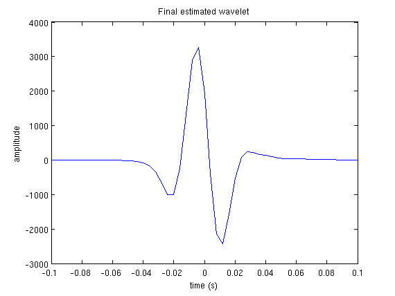
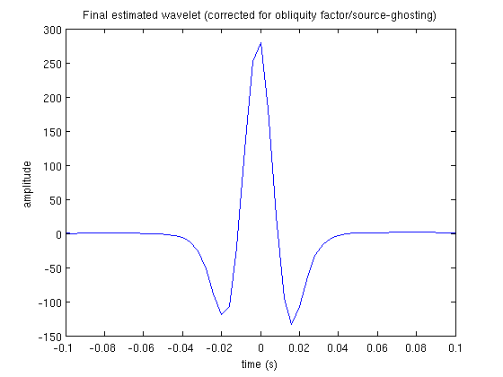
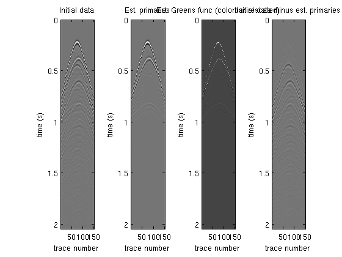
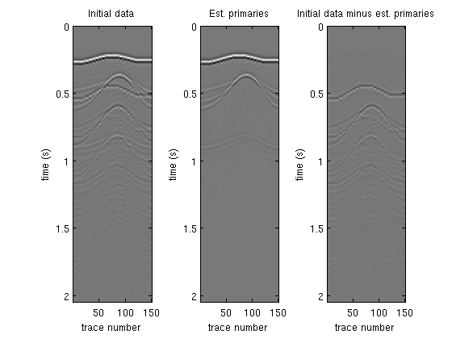

Walkthrough for robust estimation of primaries by sparse inversion via one-norm minimization
A guide to getting up and running with Robust EPSI on an example synthetic dataset
Tim Tai-Yi Lin (tlin@eos.ubc.ca), March 19th 2012
Contents
Prerequisites
- This guide assumes that you are using a unix-style terminal.
- This walkthrough also implicitly assumes that you can execute the cURL utility from the command line, which is almost always the case. Try executing curl in your terminal to see if it exists.
- Finally, the Robust EPSI program itself is written in pure MATLAB, and requires MATLAB r2009B (7.9) or newer versions.
Step 1: Obtain example dataset
First of all, make sure you are at /applications/WavefieldSeparation/RobustEPSI/ relative to the install path of the SLIM Software Release. The rest of this walkthrough will take place within this directory.
Change into the data directory, and run scons on the command line.
$ cd data
$ scons
scons: Reading SConscript files ...
scons: done reading SConscript files.
scons: Building targets ...
os.chdir('.')
CURLGetFile(["GulfOfSuez178.su"], [])
% Total % Received % Xferd Average Speed Time Time Time Current
Dload Upload Total Spent Left Speed
100 131M 100 131M 0 0 39.1M 0 0:00:03 0:00:03 --:--:-- 39.1M
os.chdir('.')
CURLGetFile(["SuezShots125.355shots.su"], [])
% Total % Received % Xferd Average Speed Time Time Time Current
Dload Upload Total Spent Left Speed
100 521M 100 521M 0 0 36.4M 0 0:00:14 0:00:14 --:--:-- 47.6M
os.chdir('.')
CURLGetFile(["model1_150_by_150_shot_106_255.mat"], [])
% Total % Received % Xferd Average Speed Time Time Time Current
Dload Upload Total Spent Left Speed
100 41.5M 100 41.5M 0 0 13.5M 0 0:00:03 0:00:03 --:--:-- 13.5M
scons: done building targets.Ensure that you end up downloading the three datafiles model1_150_by_150_shot_106_255.mat, GulfOfSuez178.su, and SuezShots125.355shots.su into this directory. If not, click here to download a zip package that contain all three files.
Step 2: Setting program parameters (using the provided SCons scripts)
Exit the data directory and enter the Synthetic directory. Much like in step 1, you will also find a SConstruct file under this directory. Run scons on the command line here.
$ scons
scons: Reading SConscript files ...
scons: done reading SConscript files.
scons: Building targets ...
echo "addpath(genpath('/users/slic/timlin/Seismic/SINBAD/tools/algorithms/REPSI'));EPSI_SLIM_main('window_startT',0.15,'useOblique',1,'relError',0.05,'window_endT',1,'sol_file','/scratch/slic/timlin/RobustEPSI_SLIM/Synthetic/Synthetic_result.mat','maxTotalIter',70,'q_estLength_posT',0.1,'output_wavelet_file','Synthetic_wavelet.mat','show_preview',1,'useSparsity',0,'preview_file','Preview/Synthetic_preview.mat','input_file','../data/model1_150_by_150_shot_106_255.mat','padtime',11,'output_primary_file','Synthetic_primary.mat','parallel',0,'topmuteT',0.15,'verbosity',0,'savepreviewmat',1,'output_primaryIR_file','Synthetic_primaryIR.mat','q_estLength_negT',0.1);" > Synthetic.m
echo "addpath(genpath('/users/slic/timlin/Seismic/SINBAD/tools/algorithms/REPSI'));EPSI_SLIM_main('window_startT',0.15,'useOblique',1,'relError',0.05,'window_endT',1,'sol_file','/scratch/slic/timlin/RobustEPSI_SLIM/Synthetic/Synthetic_sparsity_result.mat','maxTotalIter',70,'q_estLength_posT',0.1,'output_wavelet_file','Synthetic_sparsity_wavelet.mat','show_preview',1,'useSparsity',1,'preview_file','Preview/Synthetic_sparsity_preview.mat','input_file','../data/model1_150_by_150_shot_106_255.mat','padtime',11,'output_primary_file','Synthetic_sparsity_primary.mat','parallel',0,'topmuteT',0.15,'verbosity',0,'savepreviewmat',1,'output_primaryIR_file','Synthetic_sparsity_primaryIR.mat','q_estLength_negT',0.1);" > Synthetic_sparsity.m
echo "addpath(genpath('/users/slic/timlin/Seismic/SINBAD/tools/algorithms/REPSI'));EPSI_SLIM_main('window_startT',0.15,'useOblique',1,'relError',0.05,'window_endT',1,'sol_file','/scratch/slic/timlin/RobustEPSI_SLIM/Synthetic/Synthetic_sparsity_parallel_result.mat','maxTotalIter',70,'q_estLength_posT',0.1,'output_wavelet_file','Synthetic_sparsity_parallel_wavelet.mat','show_preview',1,'useSparsity',1,'preview_file','Preview/Synthetic_sparsity_parallel_preview.mat','input_file','../data/model1_150_by_150_shot_106_255.mat','padtime',11,'output_primary_file','Synthetic_sparsity_parallel_primary.mat','parallel',1,'topmuteT',0.15,'verbosity',0,'savepreviewmat',1,'output_primaryIR_file','Synthetic_sparsity_parallel_primaryIR.mat','q_estLength_negT',0.1);" > Synthetic_sparsity_parallel.m
scons: done building targets.While the output looks complicated, what has really happened is that three MATLAB scripts have been generated, each one will execute the Robust EPSI program with slightly different parameters. (This script was only tested in the BASH shell; if you use a different shell and it doesn't work, e-mail me) To understand what is going on, let's look into the SConstruct file. The interesting part starts at line 49:
# define a common set of options
commonopt={}
commonopt["matlab_func"] = default_matfcts
commonopt["input_file"] = "../data/model1_150_by_150_shot_106_255.mat"
commonopt["maxTotalIter"] = 70
commonopt["padtime"] = 11
commonopt["topmuteT"] = 0.15
commonopt["q_estLength_posT"] = 0.1
commonopt["q_estLength_negT"] = 0.1
commonopt["useOblique"] = 1
commonopt["relError"] = 0.05
commonopt["window_startT"] = 0.15
commonopt["window_endT"] = 1
commonopt["savepreviewmat"] = 1
commonopt["show_preview"] = 1
commonopt["verbosity"] = 0This section defines default settings for each program. For the SINBAD software release, Robust EPSI is organized such that each of the folders Synthetic, GulfOfSuez178, and GulfOfSuez355 correspond to a specific dataset (see README_examples.txt for more information), and therefore the settings above are specific to one dataset.
It may look like there is a lot of settings, but only a few of these are truly important: input_file, topmuteT, maxTotalIter, and relError. The rest are typical default values that is simply included here for the sake of explicitness. See the included PARAMETERS_LIST.txt file for more detials regarding these parameters.
The next three blocks in the SConstruct file corresponds to the three MATLAB scripts that were outputted when we ran SCons. Each block does the same thing:
- clone the default settings in commonopt (technically by cloning the Python dict obtect)
- give this new "experiment" a different name (this will end up determining the name of the resulting MATLAB script)
- add some additional parameter settings
- append this particular "experiment" to the list that keeps track of all experiments to generate custom MATLAB scripts for.
# Serial version without using sparsity frames expr=commonopt.copy() expr["name"] = "Synthetic" expr["useSparsity"] = 0 expr["parallel"] = 0 expr["output_primary_file"] = expr["name"] + "_primary.mat" expr["output_primaryIR_file"] = expr["name"] + "_primaryIR.mat" expr["output_wavelet_file"] = expr["name"] + "_wavelet.mat" runs.append(expr)
It is perhaps best to think of this script as a preference file. The above block will generate the file Synthetic.m in the Synthetic directory. If you look into this script, you will see that it simply calls the main Robust EPSI driver EPSI_SLIM_main.m with the specified parameters passed in as keyword-argument pairs.
You are of course free to set your own parameters. Any parameter in PARAMETERS_LIST.txt can be specified by copying the convention here. If you don't want to override existing settings, simply copy and insert the above block below all the others and give it a new name.
For more information on the different settings I have provided here, and also how you can use your own dataset, please see the included README_examples.txt file.
Step 3: Execute the Robust EPSI program
With all the parameters already set, executing the program is very easy. Simply enter MATLAB and execute any one of the scripts. Synthetic.m is a short example of Robust EPSI executed on a small synthetic dataset for 70 iterations, and should take no more than half-an-hour on a machine with >4GB memory.
>> Synthetic Loading SLIM Toolboxes from /users/slic/timlin/Seismic/SINBAD Done loading SLIM Toolboxes Reading from a matlab datafile... One-norm of the datacube: 4316425.5901 Inf-norm of the datacube: 12.9496 Two-norm of the datacube: 3151.6429 Preparing for Robust EPSI processing... The use of sparsifying transform is OFF
CURRENTLY WORKING ON: Initial sparse estimation of primaries from autocorrelation misfit is LSQ Initial picked spikes scaled by: 2.8015 * (1 from options)
CURRENTLY WORKING ON: Alternating optimization loop 1 wavelet inversion phase
... scaled by: 22.2165 CURRENTLY WORKING ON: Alternating optimization loop 1 primary IR inversion phase
misfit is LSQ
... scaled by: 1.5598
(current cumulated total L1 gradient-step count: 7) CURRENTLY WORKING ON: Alternating optimization loop 2 wavelet inversion phase
... scaled by: 13.2025 CURRENTLY WORKING ON: Alternating optimization loop 2 primary IR inversion phase
misfit is LSQ
... scaled by: 1.1549
(current cumulated total L1 gradient-step count: 20) CURRENTLY WORKING ON: Alternating optimization loop 3 wavelet inversion phase
... scaled by: 9.0005 CURRENTLY WORKING ON: Alternating optimization loop 3 primary IR inversion phase
misfit is LSQ
... scaled by: 1.1022
(current cumulated total L1 gradient-step count: 30) CURRENTLY WORKING ON: Alternating optimization loop 4 wavelet inversion phase
... scaled by: 8.074 CURRENTLY WORKING ON: Alternating optimization loop 4 primary IR inversion phase
misfit is LSQ
... scaled by: 1.0544
(current cumulated total L1 gradient-step count: 36) CURRENTLY WORKING ON: Alternating optimization loop 5 wavelet inversion phase
... scaled by: 8.0132 CURRENTLY WORKING ON: Alternating optimization loop 5 primary IR inversion phase
misfit is LSQ
... scaled by: 1.0524
(current cumulated total L1 gradient-step count: 46) CURRENTLY WORKING ON: Alternating optimization loop 6 wavelet inversion phase
... scaled by: 7.7067 CURRENTLY WORKING ON: Alternating optimization loop 6 primary IR inversion phase
misfit is LSQ
... scaled by: 1.0407
(current cumulated total L1 gradient-step count: 76) CURRENTLY WORKING ON: Entering final wavelet polish/debiasing phase ...
... scaled by: 7.8933 Recording solution information... preview mat file saved successfully
(preview data plotted to screen)
Writing primaries to a matlab datafile...
Writing primaries to a matlab datafile...
Writing source wavelet to a matlab datafile...
... Finished.You can set verbosity = 1 to enable more detailed output of the optimization algorithms used to solve for the surface-free impulse response and the source wavelet.
Step 4: Viewing the result
The script we just executed above is set to save the resulting output to the files Synthetic_primary.mat, Synthetic_primaryIR.mat, and Synthetic_wavelet.corrected.mat. You can view them by opening the files in MATLAB. You can also have Robust EPSI output SU file or native single-precision binary blobs by setting the extension to ".su" and ".bin" respectively.
We also have a built-in utility (/tools/algorithms/REPSI/display_Preview.m) for viewing a small preview of the result (generated in the Preview subdirectory when the parameter savepreviewmat = 1). In Synthetic.m setting it is set to execute automatically, but you can run it in a standalone fashion:
display_Preview('../Synthetic/Preview/Synthetic_preview.mat')
    This concludes the tutorial on executing Robust EPSI using the built-in dataset. Please feel free to play with different settings or use your own dataset. See README_examples.txt for more information.